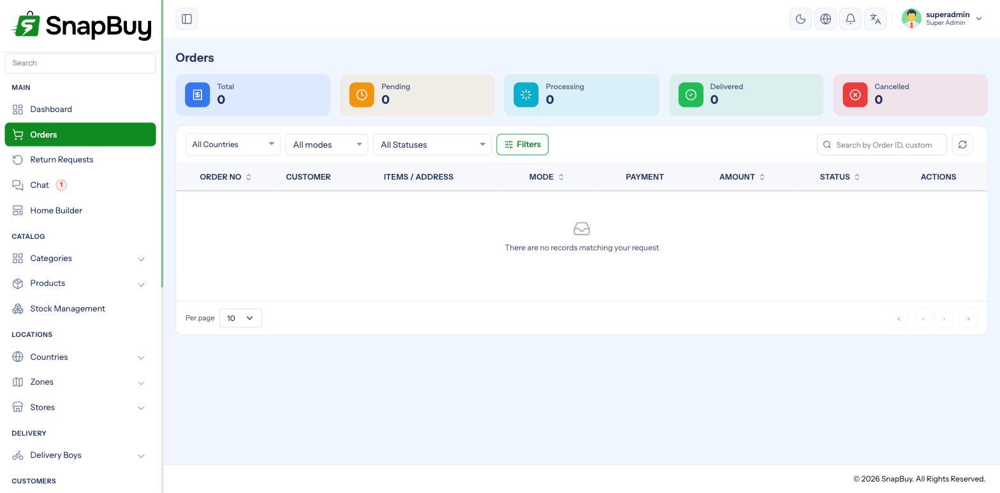

Orders Workflow
Menu path: Orders
Orders move through a fixed sequence of statuses. The sequence differs by sales channel — quick commerce and eCommerce are not the same flow.

Two flows, one order list
Quick commerce
Payment Pending → Received → Preparing → Ready for Pickup
→ Picked Up → Out For Delivery → DeliveredPlus Cancelled at any point before delivery.
eCommerce
Payment Pending → Received → Processed → Shipped
→ Out For Delivery → DeliveredPlus Cancelled, and Returned after delivery.
| Status | Quick | eCommerce | Meaning |
|---|---|---|---|
| Payment Pending | ✓ | ✓ | Awaiting payment confirmation |
| Received | ✓ | ✓ | Accepted by the store |
| Preparing | ✓ | — | Being picked and packed |
| Ready for Pickup | ✓ | — | Waiting for the rider |
| Picked Up | ✓ | — | Rider has collected it |
| Processed | — | ✓ | Packed for dispatch |
| Shipped | — | ✓ | Handed to the carrier |
| Out For Delivery | ✓ | ✓ | On its way to the customer |
| Delivered | ✓ | ✓ | Completed |
| Cancelled | ✓ | ✓ | Cancelled |
| Returned | — | ✓ | Returned after delivery |
Why quick has three extra statuses
Quick commerce is fulfilled from a nearby store with a rider who physically collects the order, so Preparing / Ready for Pickup / Picked Up give the store and the rider a shared view of the handover. eCommerce goes through packing and shipping instead.
Do not expect Processed or Shipped on a quick order
They are not part of that flow and will not appear. If someone is looking for "Shipped" on a quick-commerce order, they are looking at the wrong channel's vocabulary.
Payment Pending
An order sits here until payment is confirmed.
Orders stuck in Payment Pending usually mean a missing webhook
If money left the customer's account but the order never left this status, the gateway's callback never reached your server. See Payment Gateways — Webhooks.
Check this before assuming the customer did not pay — you may be about to cancel an order that was paid for.
Cash on Delivery orders skip straight to Received.
Assigning a delivery boy
Assign a rider from the order. On assignment:
- The rider is notified (
assign_order_delivery_boy) - The customer is notified (
assign_order_customer) - The order appears in that rider's portal
Riders only see a restricted set of statuses
In their own portal, a rider can move a quick order through Ready for Pickup → Picked Up → Out For Delivery → Delivered, and an eCommerce order only between Out For Delivery and Delivered.
Everything earlier in the flow is the store's job, done from this panel. A rider cannot mark an order Received or Preparing.
Notifications need cron and Firebase
Assignment notifications are queued jobs delivered by push. Without the cron job and Firebase, riders are never told they have work — the order simply sits unassigned in their view.
Delivery OTP
If Generate OTP is enabled in App Settings, the customer receives a code the rider must enter to mark the order delivered.
Enable it for cash orders at minimum
It is the cheapest proof of delivery you have and settles most "it never arrived" disputes without an investigation.
Cancelling
Orders can be cancelled up to delivery. Cancellation triggers order_item_cancelled_customer, and any refund follows your payment gateway or goes to the customer's wallet.
Cancelling releases reserved stock
Stock held against the order returns to available at the store it was reserved from. If stock figures look wrong after a busy day, check for orders cancelled mid-flow.
Per-item status
Status is tracked at item level, not only for the order as a whole. A single order can have one item delivered and another cancelled or returned — which is why the customer notifications are named order_item_*.
This matters for partial refunds
Because items carry their own status, you can cancel or return one line without disturbing the rest of the order.
Invoices
Invoices are generated as PDFs, numbered with the prefix from General Settings.
Invoice numbering is set at creation
Changing the prefix later does not renumber existing invoices. Set it during initial setup.
Troubleshooting
| Symptom | Cause | Fix |
|---|---|---|
| Order stuck in Payment Pending | Gateway webhook not received | Register the webhook; check HTTPS reachability |
| Rider not notified of assignment | Cron or Firebase not working | Check Cron Jobs, Firebase |
| Expected status missing | Wrong channel's flow | Quick and eCommerce use different statuses |
| Rider cannot advance the status | Riders only get a restricted set | Move it from the panel |
| Customer not notified of status changes | order_item_status_customer disabled | Enable it in Notification Settings |
| Stock wrong after cancellations | Reserved stock released | Verify at the store's variant record |
| Cannot mark delivered | Delivery OTP required and not entered | Get the code from the customer, or disable OTP |